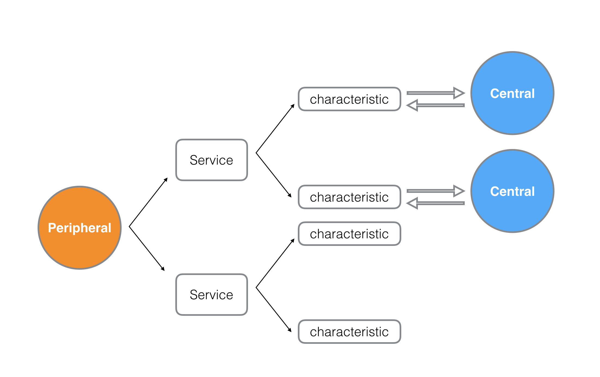

关键概念
谈到蓝牙，很容易让人联想到蓝牙穿戴设备，好像听起来更靠近硬件层一些。苹果其实对iOS和OSX上的蓝牙已做了一层很好的封装，看过CoreBluetooth Framework的大致API之后，基本上就将其流程明白个大概。难点在于理解其工作模式和理清一些关键概念，比如Peripehral, Central, Service, characteristics等等，不要被这些陌生的单词吓到，网络协议的应用大多脱不了CS的架构模型，这里和大家一起对照传统的Client/Server架构来梳理下iOS和OSX上CoreBluetooth的重要知识点。我画了一张图，方便大家一目了然的明白CoreBluetooth的工作原理。

我们只需要把Peripehral, Central, Service, characteristics几个概念理清，再各自对应到我们之前关于CS的知识体系之中就可以轻松的做一层自己的封装了。
初次查看CoreBluetooth文档的时候，很容易把Central理解成Server，其实刚好相反，Peripheral才是我们的Server。正如上图所示，Peripheral和Central之间建立的是一对多的关系。每个Peripheral会以广播的模式告诉外界自己能提供哪些Service，这里Service的概念和我们传统CS架构当中的Service基本是一致的，每个PeriPheral可以提供多个Service，而每个Service呢，会包含多个characteristic，characteristic是个陌生但十分关键的概念，可以把characteristic理解成一个Service模块具体提供哪些服务，比如一个心率监测Service同时包含心率测量characteristic和地理位置定位characteristic。
Peripheral作为Server，Central作为Client，Peripheral广播自己的Service和characteristic，Central订阅某一个具体的characteristic，Peripheral就和Central之间通过characteristic建立了一个双向的数据通道，整个模型非常简洁而且符合我们CS的架构体系。接下来具体看下CoreBluetooth的相关API。
优雅的CoreBluetooth
首先值得开心一把的是iOS和OSX使用的是同一套API封装，都是基于CoreBluetooth Framework，只在极细小的地方有些差异，完全可以做一层library的封装在两个平台上无缝衔接使用。
在具体搭建基于CoreBluetooth应用之前，要先确立到底哪一方作为Peripheral，哪一方又是Central。Macbook，iPhone，iPad都能成为Peripheral或者Central。我们通过代码的方式再看一遍上面的架构流程。
Server端
创建Peripheral，也就是我们的Server:
1 | _peripheral = [[CBPeripheralManager alloc] initWithDelegate:self queue:nil]; |
生成Service以备添加到Peripheral当中:
1 | CBMutableService *transferService = [[CBMutableService alloc] initWithType:[CBUUID UUIDWithString:TRANSFER_SERVICE_UUID] primary:YES]; |
生成characteristics以备添加到Service当中:
1 | self.transferCharacteristic = [[CBMutableCharacteristic alloc] initWithType:[CBUUID UUIDWithString:TRANSFER_CHARACTERISTIC_UUID] |
建立Peripheral，Server，characteristics三者之间的关系并开始广播服务:
1 | //建立关系 |
Client端
创建我们的Central，也就是client:
1 | _central = [[CBCentralManager alloc] initWithDelegate:self queue:nil]; |
扫描可用的Peripheral:
1 | [self.central scanForPeripheralsWithServices:@[[CBUUID UUIDWithString:TRANSFER_SERVICE_UUID]] |
扫描到Peripheral之后连接:
1 | [self.central connectPeripheral:targetPeripheral options:nil]; |
连接成功之后查找可用的Service：
1 | [peripheral discoverServices:@[[CBUUID UUIDWithString:TRANSFER_SERVICE_UUID]]]; |
找到Service之后，进一步查找可用的Characteristics并订阅:
1 | //查找Characteristics |
查找到Characteristics订阅：
1 | //订阅 |
订阅之后Central和Peripheral之间就建立了一个双向的数据通道，后续二者之间的数据传输就可以通过characteristic来完成了。
数据传输
有了数据通道，接下来就是如何传输数据了。说到数据传输就免不了要确定应用层的协议，类似平时我们使用socket实现游戏的网络模块时，需要自定义应用层协议才能实现业务数据的交换，协议的设计这里就不展开说了，之前有过相关经验的童鞋完全可以把协议层迁移过来。
再看下Peripheral是如何向Central发送数据的，首先Peripheral会向自己的characteristic写数据：
1 | [self.peripheral updateValue:chunk forCharacteristic:self.transferCharacteristic onSubscribedCentrals:@[self.central]]; |
Central那一端会通过如下回调收到来自Peripheral的数据流：
1 | - (void)peripheral:(CBPeripheral *)peripheral didUpdateValueForCharacteristic:(CBCharacteristic *)characteristic error:(NSError *)error; |
这里值得注意的是二者数据的发送与获取，是以二进制流的方式发送的，是NSData形式的封装的，Peripheral可以持续不停的发送二进制流，所以Central端收到的时候需要自己做协议的解析，根据自定义协议将整个流拆成一个个的业务Packet包。
而Central发送的时候却是封装成了一个个的Request，比如Central端调用如下API发送数据：
1 | [self.discoveredPeripheral writeValue:data forCharacteristic:self.discoveredCharacterstic type:CBCharacteristicWriteWithoutResponse]; |
Peripheral端会收到如下回调：
1 | - (void)peripheralManager:(CBPeripheralManager *)peripheral didReceiveWriteRequests:(NSArray<CBATTRequest *> *)requests |
数据被封装成了单独的CBATTRequest，直接去Request当中取value就可以获取到Central所发送过来的数据。
已知的坑
我之前测试协议的时候发现一个不大不小的坑，多个Central（比如A和B）端同时一个Peripheral发送数据的时候，Peripheral会收到多个CBATTRequest，奇怪的是每个CBATTRequest当中的Central都会指向最先建立连接的A，结果导致Peripheral端无法判断write请求的数据来自哪一个Central。
参考链接：